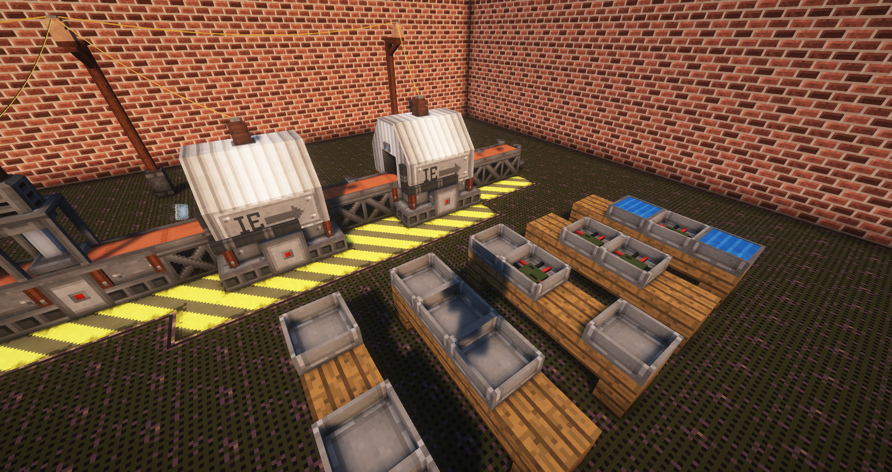
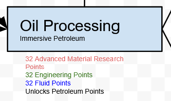
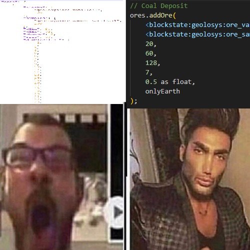

DevLog 2 [6/20/2024]
Solar Flux Reborn Rework Finished, Tech Tree Planning, and Ore Generation
Before we get into this week's (or this bi-week's?) DevLog I want to apologize for the delay. Commitments in my life have left me with less time to work on Towny than I would like to, but we're still trucking along! Another excuse reason for delay is the creation of the website you're reading this on! Writing DevLogs on discord with character limits, limited formatting options, lack of pictures, and all that junk made writing that first DevLog a pretty terrible experience, so here we are!
Solar Flux Reborn
First off, we've got the most basic of the changes since last DevLog, finishing the Solar Flux rework. This is a pretty basic one, so I'll keep it brief. Solar Flux reborn has been reworked to be more in line with our vision of automation and assembly lines. This includes removing some of the more overpowered later game panels, changing the recipe for all existing panels to fit better into our progression, and creating some cool crafting recipes. All pretty basic stuff, but it should make solar panels a bit more interesting to craft, and should blend better with our existing power generation methods.
Tech Tree Planning
This is a big one, it's been a thing we've been trying to coordinate and figure out for months now at this point, but it's done. All costs, placements of techs, and specializations are (for the most part) finalized and ready for implementation into the modpack. This has been something we've been working on and discussing over the course of numerous meetings lasting hours, as we try to balance the tree the best we can, without actually performing a live play test. We think our values are fairly balanced, and while I for sure have my doubts that they're perfect, they should be good enough for our play test, so we can gather feedback on what needs to be tweaked. After all this is an open beta, so just because we spend lots of time working on new features, doesn't mean we'll get them right the first time. That's what y'all are for!
This might not seem too exciting, but I can assure you this was the last big meeting that needed to happen before we could, for good, finish up development on 0.7! Be on the lookout for more news relating to the finishing of the new research system (aka the whole point of the update), which should hopefully be the forefront of my next DevLog.
Ore Generation
This has been what I've been spending the most time on since the last DevLog, so let's jump right into it.
First, the refactor. Our original Geolosys ore generation was written in JSON, the typical way of writing your own generation for Geolosys. However, this was difficult to work with because, JSON has to adhere to a specific format for it to be properly read by the code reading it. As a result of this, our ore gen file was difficult to read and make changes too. To rectify this, making changes to our ore gen easier in the future, we've rewritten everything using CraftTweaker rather than JSON. This results in much easier to read code, allowing us to more easily make changes to how ore is generated.
It's not just a basic code refactor though! We're reworking all of our generation based on player feedback, and our own observations. Vein size, vein rarity, and vein y-levels have all been adjusted or are in the process of being adjusted, with the goal of making too overpowered veins more balanced, and too rare veins actually reasonable to find and utilize. All of these changes are being more thoroughly tested, calculated, and measured via Excel sheets and graphs, to create a more balanced experience ahead of the play test.

Another major change to ore generation is the reimplementation of vanilla ore generation. Well not completely vanilla ore generation... Geolosys deposits are the best and will always be the best method of gathering materials for your nation, but what do you do when you're just getting started, or just really struggling to find that Redstone deposit? Well you go mining for it! That's right, 0.7 marks the return of caving and mining through our new impure ore veins. They generate just like vanilla ore generation, just much smaller. Mining this way sucks, but sometimes it beats spending hours looking for a huge Lapis vein to get the one piece of Lapis you need to make your cyan bed.
That's all for today's DevLog. Again sorry for the delays, but when next DevLog rolls around we should have some more cool news to share. Heck we might even be on track for a late Summer release. But who knows? It's not like our release date estimates are ever accurate anyway!
Thanks for sticking with the project, see y'all soon!